surface angle. I will label this
surface angle. I will label this
 surface angle with the capital
letter 'C'. This means that the planes which define angle 'C' intersect each
other at 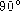.
surface angle with the capital
letter 'C'. This means that the planes which define angle 'C' intersect each
other at 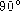.
I used spherical trigonometry to calculate all the angles for the 48 and the 120 LCD spherical triangles of the vector equilibrium and the icosahedron generated by the primary great circles. The presentation given here is far from complete and provides no proofs of the relations stated.
The only text book on spherical trigonometry which I have been able to locate is Plane And Spherical Trigonometry, by Kells, Kern, and Bland, McGraw-Hill Book Co., 1940. Other sources to consult are mathematics encyclopedia and dictionaries.
A spherical triangle is defined when three planes pass through the surface of a sphere and through the sphere's center of volume.
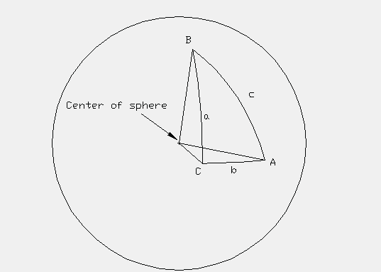
A spherical triangle has three surface angles and three central angles. In the figure, 'A', 'B', and 'C' label the surface angles while 'a', 'b', and 'c' label the central angles. The surface angles correspond to the angle at which two planes intersect each other. Note that the arcs are labeled by the central angles. In particular, notice that the arc opposite a surface angle is labeled with the surface angle's LOWER case letter. For example, the arc opposite the surface angle 'A' is labeled by the lower case letter 'a'. This is just notation and need not be followed, but it helps in remembering the relations to follow.
As with plane trigonometry, it is usually easiest to work with a right
spherical triangle. That is, a spherical triangle which has a
surface angle. I will label this
surface angle with the capital
letter 'C'. This means that the planes which define angle 'C' intersect each
other at 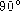.
It may be necessary to either extend a spherical triangle or divide a spherical
triangle into two triangles in order to obtain a  spherical
triangle. See below. This is often done in plane trigonometry.
spherical
triangle. See below. This is often done in plane trigonometry.
Let B be an angle. We define the complement angle  to be 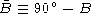. Then from the trigonometric relations given in
Plane Trig, we have
to be 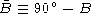. Then from the trigonometric relations given in
Plane Trig, we have
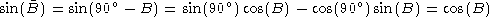
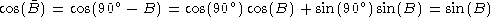
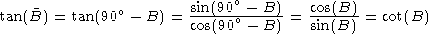
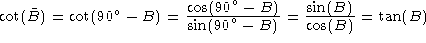
Note that in paragraph 1050.40 of Synergetics, the complement angle, identified by a small superscript 'c', is incorrectly identified as being 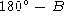. The angle is known as the supplemental angle.
Napier's Rules for a spherical right triangle may be stated as:
1. The sine of an angle is equal to the product of cosines of the opposite two angles.
2. The sine of an angle is equal to the product of tangents of the two adjacent angles.
There is an easy way to determine which angles are the opposite and which
angles are the adjacent angles. Consider the spherical right triangle
in which the surface angle C is
 . We may write the 5
other angles (the
. We may write the 5
other angles (the  surface angle is omitted) into a circle which has
been divided into 5 ''pieces of pie''.
surface angle is omitted) into a circle which has
been divided into 5 ''pieces of pie''.
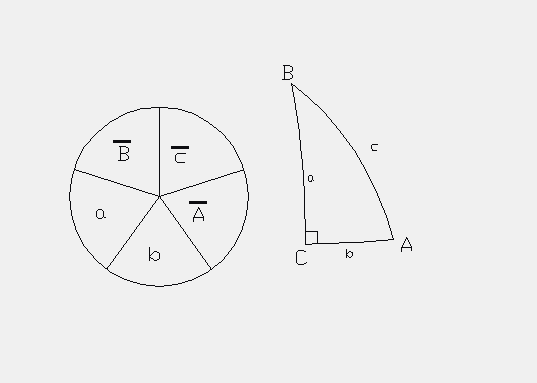
For example, starting with the angle b
and moving in a counter clockwise direction around the spherical triangle, the
angles b, a, B, c, and A
are enter into the circle also in a counter
clockwise direction. We must now take the complement of all the angles which
are NOT connected to the  surface angle C. These angles are B,
c, and A and are the angles connected to the hypotenuse. So, a bar is
written over these three angles in the circle to give us
,
,
and 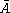.
It is now easy to see which angles are opposite and which angles
are adjacent. For example, pick angle a. The Napier circle shows that
the two opposite angles are
surface angle C. These angles are B,
c, and A and are the angles connected to the hypotenuse. So, a bar is
written over these three angles in the circle to give us
,
,
and 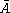.
It is now easy to see which angles are opposite and which angles
are adjacent. For example, pick angle a. The Napier circle shows that
the two opposite angles are  and while the two adjacent angles
are b and . Therefore, from Napier's Rule #1 (and the above
relations for complimentary angles), we have
and while the two adjacent angles
are b and . Therefore, from Napier's Rule #1 (and the above
relations for complimentary angles), we have
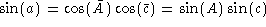
and from Napier's Rule #2, we have
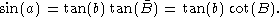
The following relations hold for spherical triangles other than just the spherical right triangle.
The Law of Cosines (central angles):
1. cos(a) = cos(b)cos(c) + sin(b)sin(c)cos(A)
2. cos(b) = cos(a)cos(c) + sin(a)sin(c)cos(B)
3. cos(c) = cos(a)cos(b) + sin(a)sin(b)cos(C)
The Law of Cosines (surface angles):
1. cos (A) = - cos(B)cos(C) + sin(B)sin(C)cos(a)
2. cos (B) = - cos(A)cos(C) + sin(A)sin(C)cos(b)
3. cos (C) = - cos(A)cos(B) + sin(A)sin(B)cos(c)
The Law of Sines:
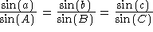
If we know the angles a, A, and b, then we can solve for the angle B by the Law of Sines
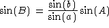
It is possible when using the Law of Sines to obtain no solution, one solution, or two solutions. In the above example, if 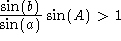, then the Law of Sines gives no information about angle B since the sine of an angle is always less than or equal to one. We must also remember that 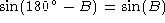 and so we must consider not only the angle B but also its supplement 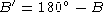. So there are two possible solutions, B and . One of the solutions can be discarded if we know some other constraint on the angle B. For example, if we know that 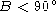 and the Law of Sines gives us and 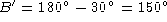, we can discard the solution.
Although there are other relations which could be stated, these are the only ones which I have needed in order to calculate the spherical triangle data in the Synergetics books.
There are many methods for obtaining the solution to a spherical trigonometry problem as well as many other details which you will find in a spherical trigonometry text book.
Usage Note: My work is copyrighted. You may use my work but you may not include my work, or parts of it, in any for-profit project without my consent.